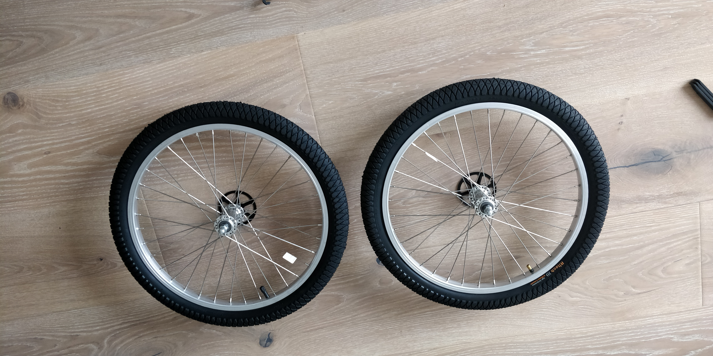
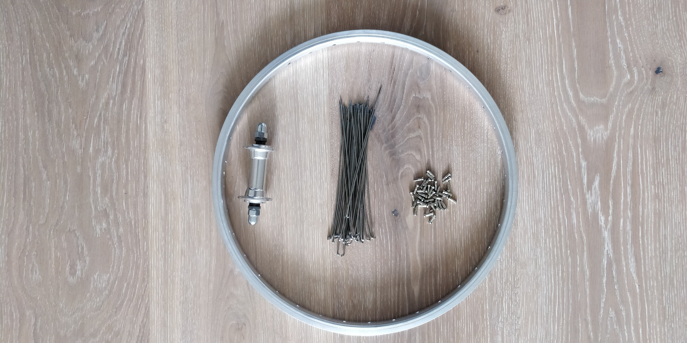
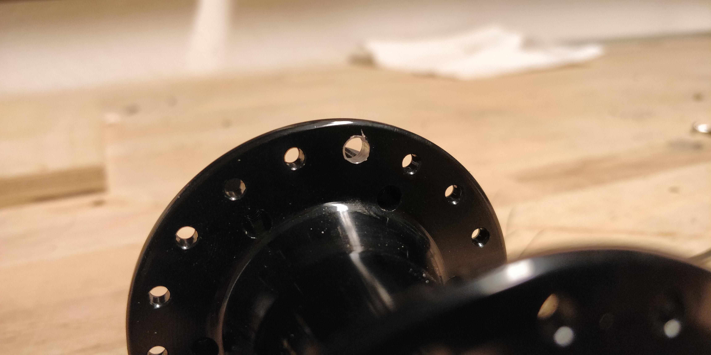
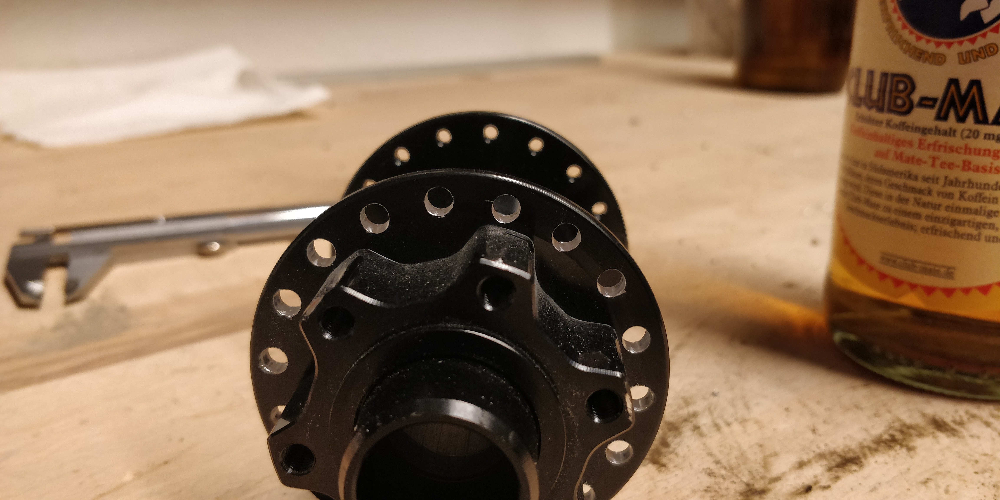
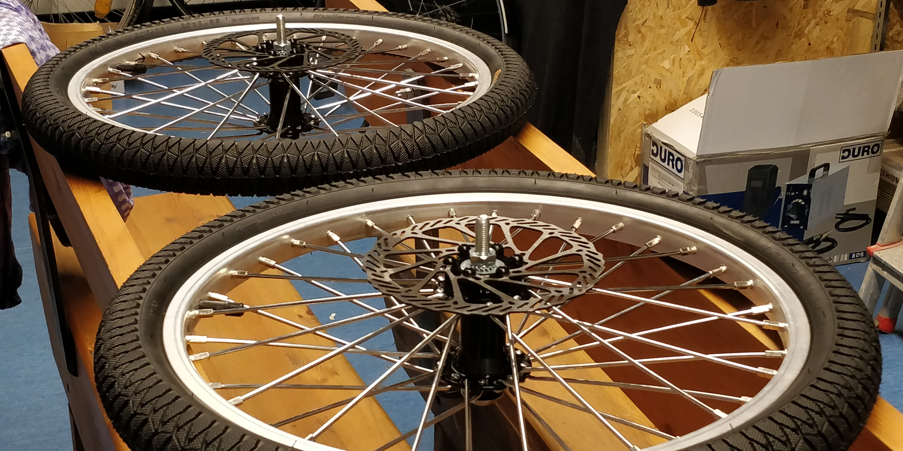
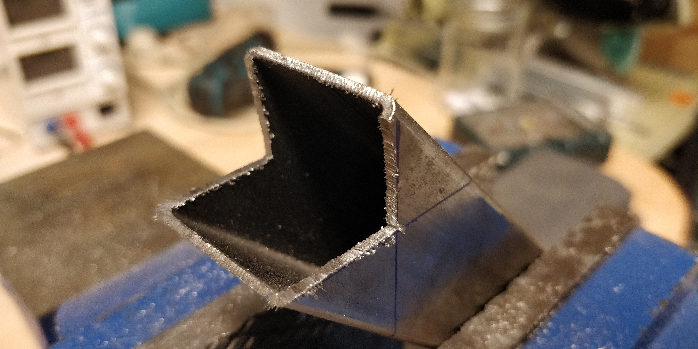
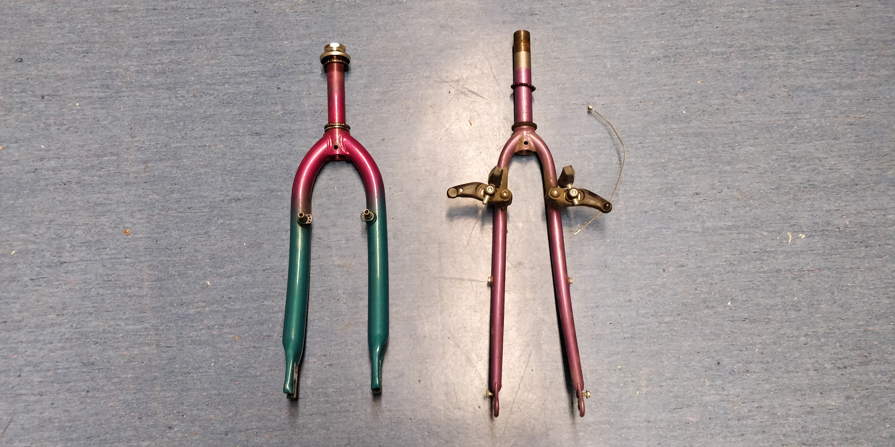
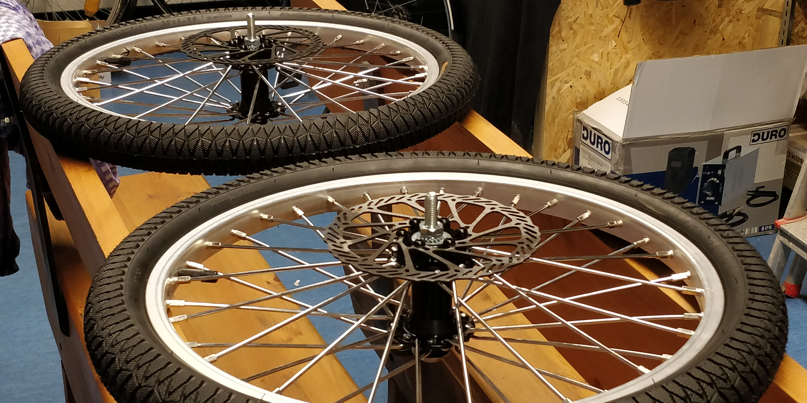
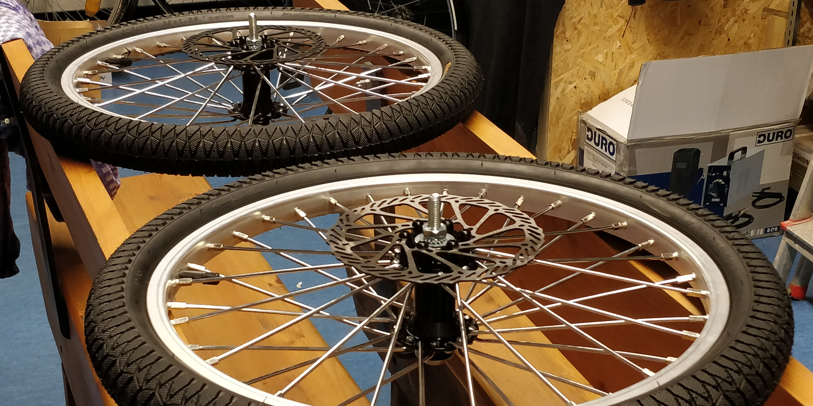
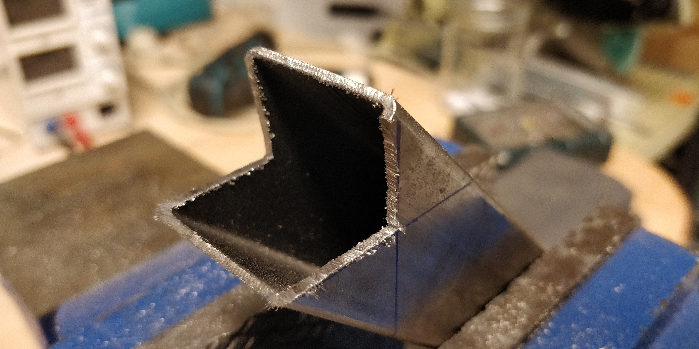

So, what's this "trike" thing? Well, it's a bike, but with three wheels. Now
there are two options doing this: two wheels in the front and one in the back
or one in the front and two in the back.
I'm going the "two in the front" way.
trikesetupwheelsthe original wheelsnew hubsframeheadsetseatdrive train

One of the wheels taken apart

So the components of a wheel are actually quite simple. you've got:
- the rim (the big round thing encircling all the other parts)
- the hub (left)
- the spokes (middle)
- nipples (right)
Now the old hubs had a few issues:
- not single sided
- not disk brakeable
So I exchanged the hubs for ones that could be mounted from one side. The
problem: due to the new hubs being bigger, the spokes were to long resulting in
utter chaos. So I went and bought new spokes (shorter ones). The problem with
these: they are a lot thicker and didn't fit through the holes in the hub, so I
went and enlarged the 72 holes in both hubs by just drilling through them with
a slightly larger drill bit.


Same for the front rims:
In the end, it all fit quite well (although it took quite some time to get the
spokes all into the rim holes, as they would not bend at all).
Front wheels done:

The idea for the frame is to build it up kind of like this (you should get the
idea):
Now the frame won't lie on the floor as in the image above, but will be
connected and form a 3D mesh. For this to work, there are a few cuts that have
to be made:

The "headset" is the part which normally combines the fork and the frame. As I
don't have a fork, but more of an axle, I have to think of something else.
I've bought a whole old broken bike on ebay-kleinanzeigen and an old individual
fork which I'll use for this.

 In the end, it all fit quite well (although it took quite some time to get the
spokes all into the rim holes, as they would not bend at all).
In the end, it all fit quite well (although it took quite some time to get the
spokes all into the rim holes, as they would not bend at all).
 Front wheels done:

Front wheels done:

Now the frame won't lie on the floor as in the image above, but will be connected and form a 3D mesh. For this to work, there are a few cuts that have to be made: 